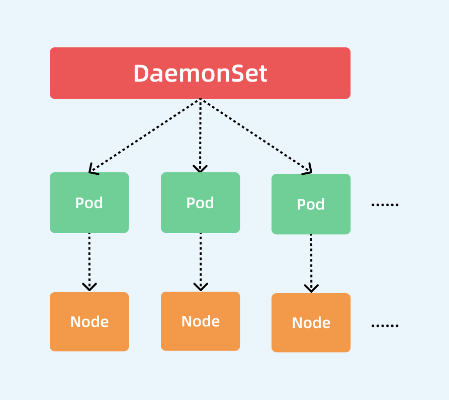

DaemonSet 控制器¶
通过该控制器的名称我们可以看出它的用法：Daemon，就是用来部署守护进程的，DaemonSet用于在每个 Kubernetes 节点中将守护进程的副本作为后台进程运行，说白了就是在每个节点部署一个 Pod副本，当节点加入到 Kubernetes 集群中，Pod 会被调度到该节点上运行，当节点从集群只能够被移除后，该节点上的这个 Pod 也会被移除，当然，如果我们删除 DaemonSet，所有和这个对象相关的 Pods都会被删除。那么在哪种情况下我们会需要用到这种业务场景呢？其实这种场景还是比较普通的，比如：
- 集群存储守护程序，如 glusterd、ceph 要部署在每个节点上以提供持久性存储；
- 节点监控守护进程，如 Prometheus 监控集群，可以在每个节点上运行一个 node-exporter 进程来收集监控节点的信息；
- 日志收集守护程序，如 fluentd 或 logstash，在每个节点上运行以收集容器的日志
- 节点网络插件，比如 flannel、calico，在每个节点上运行为 Pod 提供网络服务。
这里需要特别说明的一个就是关于 DaemonSet 运行的 Pod 的调度问题，正常情况下，Pod 运行在哪个节点上是由 Kubernetes 的调度器策略来决定的，然而，由 DaemonSet 控制器创建的 Pod 实际上提前已经确定了在哪个节点上了（Pod创建时指定了.spec.nodeName），所以：
DaemonSet并不关心一个节点的unshedulable字段，这个我们会在后面的调度章节和大家讲解的。DaemonSet可以创建 Pod，即使调度器还没有启动。
下面我们直接使用一个示例来演示下，在每个节点上部署一个 Nginx Pod：(nginx-ds.yaml)
apiVersion: apps/v1
kind: DaemonSet
metadata:
name: nginx-ds
namespace: default
spec:
selector:
matchLabels:
k8s-app: nginx
template:
metadata:
labels:
k8s-app: nginx
spec:
containers:
- image: nginx:1.7.9
name: nginx
ports:
- name: http
containerPort: 80然后直接创建即可：
$ kubectl apply -f nginx-ds.yaml
daemonset.apps/nginx-ds created创建完成后，我们查看 Pod 的状态：
$ kubectl get nodes
NAME STATUS ROLES AGE VERSION
ydzs-master Ready master 8d v1.16.2
ydzs-node1 Ready <none> 8d v1.16.2
ydzs-node2 Ready <none> 8d v1.16.2
ydzs-node3 Ready <none> 6d23h v1.16.2
ydzs-node4 Ready <none> 6d23h v1.16.2
$ kubectl get pods -l k8s-app=nginx -o wide
NAME READY STATUS RESTARTS AGE IP NODE NOMINATED NODE READINESS GATES
nginx-ds-bpsb7 1/1 Running 0 75s 10.244.3.102 ydzs-node3 <none> <none>
nginx-ds-f4s2w 1/1 Running 0 75s 10.244.2.74 ydzs-node2 <none> <none>
nginx-ds-j9789 1/1 Running 0 75s 10.244.4.85 ydzs-node4 <none> <none>
nginx-ds-ngkt2 1/1 Running 0 75s 10.244.1.178 ydzs-node1 <none> <none>我们观察可以发现除了 master 节点之外的4个节点上都有一个相应的 Pod 运行，因为 master 节点上默认被打上了污点，所以默认情况下不能调度普通的 Pod 上去，后面讲解调度器的时候会和大家学习如何调度上去。
基本上我们可以用下图来描述 DaemonSet 的拓扑图：

集群中的 Pod 和 Node 是一一对应d的，而 DaemonSet 会管理全部机器上的 Pod 副本，负责对它们进行更新和删除。
那么，DaemonSet 控制器是如何保证每个 Node 上有且只有一个被管理的 Pod 呢？
- 首先控制器从 Etcd 获取到所有的 Node 列表，然后遍历所有的 Node。
- 根据资源对象定义是否有调度相关的配置，然后分别检查 Node 是否符合要求。
- 在可运行 Pod 的节点上检查是否已有对应的 Pod，如果没有，则在这个 Node 上创建该 Pod；如果有，并且数量大于 1，那就把多余的 Pod 从这个节点上删除；如果有且只有一个 Pod，那就说明是正常情况。
实际上当我们学习了资源调度后，我们也可以自己用 Deployment 来实现 DaemonSet 的效果，这里我们明白 DaemonSet 如何使用的即可，当然该资源对象也有对应的更新策略，有OnDelete和RollingUpdate两种方式，默认是滚动更新。